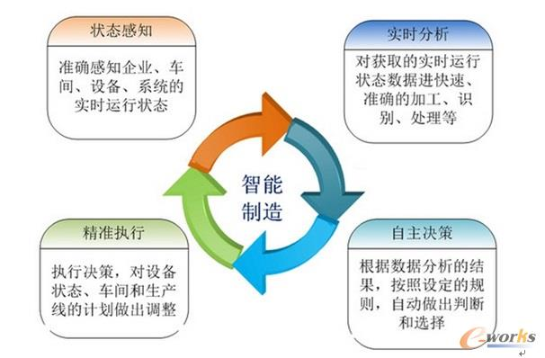
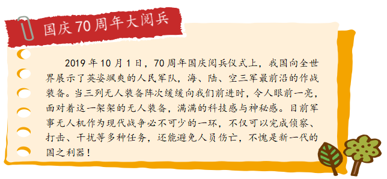
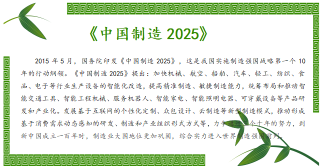

任务一 智能制造
【任务描述】
18号厂房是三一重工总装车间，有混凝土机械、路面机械、港口机械等多条装配线，是工程机械领域内颇负盛名的智能工厂。这间总面积约十万平方米的车间，成为了行业内亚洲最大最先进的智能化制造车间。在这里，厂房更像是一个大型计算系统加上传统的操作工具、大型生产设备的智慧体。在18号厂房，厂区旁边有两块电视屏幕，它们是一线工人的“老师”——不熟悉装配作业的工人，通过电子屏幕里的数字仿真和三维作业指导，可以学习和了解整个装配工艺。这里，厂房更像是一个大型计算系统加上传统的操作工具、大型生产设备的智慧体，每一次生产过程、每一次质量检测、每一个工人劳动量都记录在案。装配区、高精机加区、结构件区、立库区等几大主要功能区域都是智能化、数字化模式的产物。18号厂房经智能化车间经改造后，生产效率提升50％，成为引领行业智能制造的“新灯塔”。那么，什么是智能制造？智能制造究竟“智能”在哪？智能制造中应用了哪些人工智能技术呢？答案就在本任务学习中。
【任务实施】
1.1 什么是智能制造
智能制造是基于新一代信息通信技术与先进制造技术深度融合，贯穿于设计、生产、管理、服务等制造活动的各个环节，具有自感知、自学习、自决策、自执行、自适应等功能的新型生产方式。

1.2人工智能核心技术在智能制造行业的应用
智能制造的实现需要多个层次上技术产品的支持，主要包括工业机器人、3D打印、工业物联网、云计算、工业大数据、知识工作自动化、工业网络安全、虚拟现实和人工智能等技术。
智能制造对人工智能的需求主要表现在：一是智能装备，通过先进制造、信息处理、人工智能等技术的集成与融合，可以形成具有感知、分析、推理、决策、执行、自主学习及维护等自组织、自适应功能的智能生产系统以及网络化、协同化的生产设施，包括自动识别设备、人机交互系统、工业机器人以及数控机床等具体设备，涉及到跨媒体分析推理、自然语言处理、虚拟现实智能建模及自主无人系统等关键技术。二是智能生产，是以智能工厂为核心，将人、机、法、料、环连接起来，多维度融合的过程。智能工厂也称之为数字化车间，包括智能设计、智能生产、智能管理以及集成优化等具体内容，涉及到跨媒体分析推理、大数据智能、机器学习等关键技术。侧重点在于将人机互动、3D打印等先进技术应用于整个工业生产过程，并对整个生产流程进行监控、数据采集，便于进行数据分析，从而形成高度灵活、个性化、网络化的产业链。三是智能服务，包括大规模个性化定制、远程运维以及预测性维护等具体服务模式，涉及到跨媒体分析推理、自然语言处理、大数据智能、高级机器学习等关键技术。例如，现有涉及智能装备故障问题的纸质化文件，可通过自然语言处理，形成数字化资料，再通过非结构化数据向结构化数据的转换，形成深度学习所需的训练数据，从而构建设备故障分析的神经网络，为下一步故障诊断、优化参数设置提供决策依据。
1.3智能制造领域的典型企业
目前国内家电、汽车等行业自动化和信息化程度已经较高，其他行业，食品饮料，化工等行业正在加快自动化和信息化进程。广汽集团作为世界级智能制造的标杆工厂，在智能制造领域，广汽集团已将智能化深入到制造环节。充分贯彻 “工业 4.0”理念，实现生产自动化、信息数字化、管理智能化、智造生态化有机融合，并以质量和效能为中心，提升生产要素效率，生产线极限速度可达到 52 秒下线一辆新车，是行业领先的汽车生产线。华为松山湖生产基地，从智能车间、智能工厂开始，通过智能制造实现高效、柔性的大规模客户定制，全球领先的生产工艺、手机品控的领先标准淋漓尽致地展现在这里。海尔集团深耕制造业三十余年，是世界第四大白色家电制造商，正在以构建"互联工厂"的核心思想，尝试从大规模"制造"发展为大规模"定制"的智能制造企业，将家电定制化这一美好畅想变为现实。海尔互联工厂创新人工智能检测等多项行业领先技术，实现全流程数据链贯通，真正做到用户定单驱动生产。富士康主要聚焦于工业互联网平台构建、云计算及高效能运算平台、高效运算数据中心、通信网络及云服务设备、5G及物联网互联互通解决方案、智能制造新技术研发应用、智能制造产业升级、智能制造产能扩建等项目。

【任务拓展】
说说你身边的智能制造故事，你所了解的智能制造领域还有哪些典型企业和典型人物
